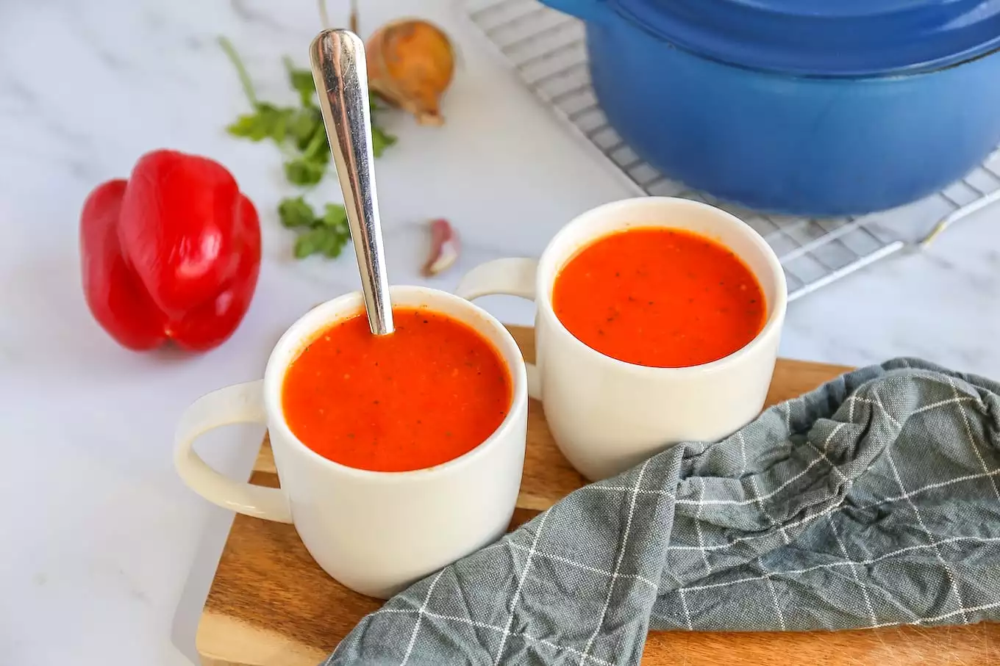

Paprikasoep
Je hebt maar een paar ingrediënten nodig en dan staat er in 20 minuten een heerlijk soepje op tafel.
Ingrediënten
- 3 paprika's
- 500 ml water
- 1 bouillonblokje (groenten)
- 1 teen knoflook
- 1 ui
- 1 tl oregano
- 1 tl basilicum
- snufje zout en peper
Bereidwijze
- Snijd de paprika's, ui en knoflook in stukjes.
- Giet een scheutje olie in een soeppan en bak de uit en knoflook.
- Vieg na een paar minuten de paprika toe en bak nog 2-3 minuten mee.
- Daarna kunnen de rest van de ingrediënten erbij.
- Breng de soep aan de kook en laat ongeveer 15 minuten koken.
- Pureer de soep met een staafmixer.
